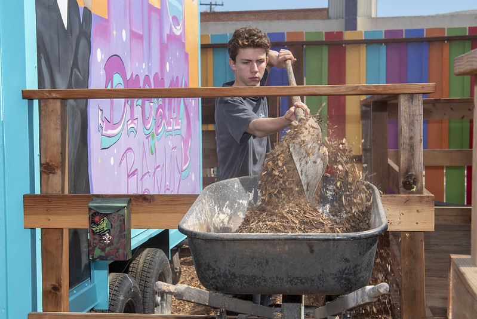

Follow our blueprint



Identify the stage a coalition is in, what's unresolved, and what plans need to be made next.
Ingests public parcel, land use, environmental, and physical suitability data, then filters and ranks parcels for tiny village viability. Validated against tiny villages that are currently up and running.
Costed bills of materials and project-level cost data from previous tiny village projects help a coalition produce a credible budget to raise against.
How many units a site supports, which layouts have worked, and which shared facilities a village requires — drawn from the Oakland and Richmond builds.
Which approvals come in what order in your jurisdiction, what a shelter crisis declaration changes, and the permitting precedent from villages that got built.